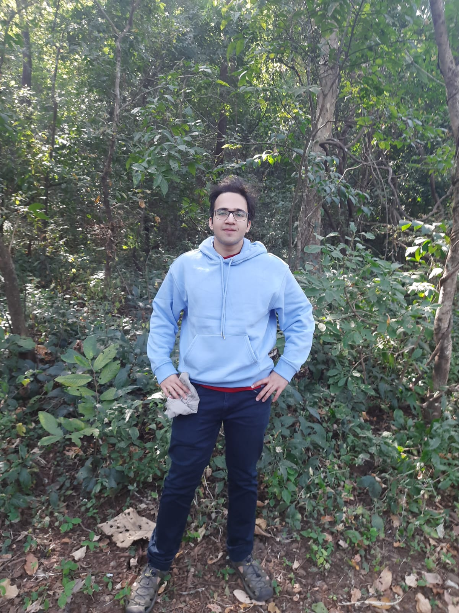

//SPIT Mumbai · RA at IIT Bombay
Scientific Computing, Machine Learning and Signal Processing!
About
Hi,I'm an undergraduate at SPIT (B.Tech Computer Engineering, CGPA 9.04; Minor in Signal Processing, 10/10) and a Research Intern at the Theoretical Molecular Sciences Lab, IIT Bombay — working on problems that sit at the intersection of science and modern machine learning.
My research spans Hamiltonian diagonalization in exponentially large Hilbert spaces using the DICE/SHCI solver, basis-set extrapolation studies, generative ML for quantum wavefunctions, neuroscience and statistics, some rudimentary work on optics and data science ,and mechanistic validation frameworks for scientific ML models.
I have a long-term bet on Scientific Machine Learning as the foundational framework for solving the most pressing problems of humanity!
Research & Projects
Modified the qiskit-addon-dice-solver to diagonalize Hamiltonians in exponentially large Hilbert spaces. Developed parallel workflows for diagonalizing polymeric molecules, conducted basis-set extrapolation studies, and performed memory and time profiling across diagonalization and generative ML workflows. Also tuned a Restricted Boltzmann Machine for the H₂O molecule.
View Poster →A mechanistic validation suite for auditing black-box PINNs — mapping hidden neural weights to governing physical parameters via sensitivity-based gradient mapping in PyTorch. Causal graphs are constructed to represent the physics of the system, enabling interpretability and targeted intervention in scientific ML models.
View Sys Arch →Cloud-compute-based analysis pipeline across three heterogeneous multi-session multi-subject (n~50 on average) P300 EEG datasets using AWS EC2 and S3. Built custom subject clustering and preprocessing pipelines in MATLAB/EEGLAB/ERPLAB, and designed Linear Mixed Effects models with FDR correction and regional electrode averaging.
View Pipeline →Automated a COMSOL–MATLAB lens design workflow at Logpose Instruments (TIFR-incubated), achieving a 75% reduction in focal spot diameter and 50% faster optimization versus manual tuning. Developed novel parameter sweep routines for systematic THz optical system exploration.
View Summary →Publications
Teaching & Mentoring
Sardar Patel Institute of Technology. Preparing practice problems, tutorial material, and lecture slides to support undergraduate instruction. Assisted in evaluation of assignments, quizzes, and assessments.
JP Morgan × Agastya Schools Initiative. Built "Story Buddy," a guided storytelling app for children, as part of this science and technology mentorship programme.
View Project →Contact
Open to conversations about research collaboration, internship opportunities, or anything at the boundary of scicomp and ML.